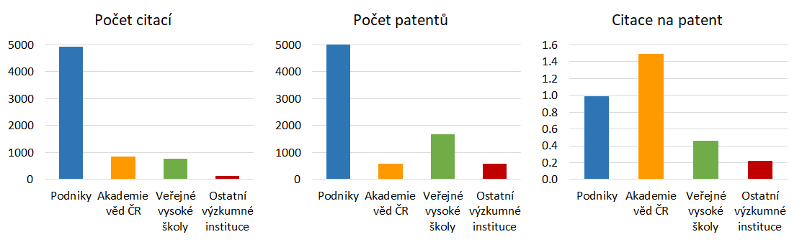

Které organizace mají nejcitovanější patenty?
Nový pohled na hodnocení patentovaného výzkumu
Oleg Sidorkin a Martin Srholec


Think-tank IDEA při Národohospodářském ústavu AV ČR
Studie č. 14/2018
Listopad 2018

Oleg Sidorkin a Martin Srholec
Think-tank IDEA při Národohospodářském ústavu AV ČR
Studie č. 14/2018
Listopad 2018
Citační ohlas odráží význam patentu. Patent, na který nic dalšího nenavazuje, nenechal ve vývoji technologií žádnou stopu. Naopak patent s mnoha následnými citacemi měl velký dopad.
Není to nic světoborného. Citace patentů se běžně používají třeba v ekonomické literatuře. Je to standardní ukazatel prověřený léty praxe. Nicméně v oblasti hodnocení výzkumu v českém kontextu je to novinka.
Jen některé výsledky aplikovaného výzkumu jsou patentované. Na základě citovanosti patentů je možné dělat závěry pouze konkrétně o patentovaném, nikoliv aplikovaném výzkumu jako celku.
Řada organizací provádí užitečný výzkum, který v patentových statistikách vidět není. Proto je třeba se vyhnout unáhleným závěrům o těch, které vykazují malý počet patentových citací, protože to může mít různé příčiny.
Zmapovali jsme celosvětové citace patentů v navazujících patentech, jejichž vlastníky jsou organizace se sídlem na území Česka, a jejichž žádosti mají datum podání od roku 2000.
Citovanost patentů jsme spočítali z individuálních údajů databáze PATSTAT (Spring 2016 edition). Prezentované výsledky jsou unikátní a nikde jinde je nenajdete.
Závěry této studie by měly zajímat nejen manažery výzkumu, potenciální partnery anebo investory, ale i tvůrce inovačních politik. Hodnocení výzkumu, na který nepasují bibliometrické analýzy, se totiž ukazuje jako zvláště obtížné.
Navazujeme na předchozí studie think-tanku IDEA na příbuzná témata.
Obdélníky zobrazují jednotlivé organizace. Velikost obdélníku odpovídá počtu citací patentů vlastněných danou organizací. Barvy obdélníků odlišují sektory.
Konkrétní organizaci lze navíc vyhledat v roletkovém menu podle jejího názvu anebo IČO nad grafem anebo najetím kurzoru přímo v grafu. Následně se zobrazí okénko s podrobnostmi.
Klikáním na legendu vyberete různé sektory, zobrazíte pouze organizace s největším počtem citací anebo zúžíte výběr na domácí či zahraniční citace, čímž si můžete vytvořit vlastní srovnání.
Pod grafem jsou odkazy na vysvětlivky a pro stažení kompletních podkladových dat za organizace anebo výpisu dat za nejcitovanější patenty.
Citace zpravidla nabíhají postupně. Navíc patentové statistiky jsou zveřejňovány se zpožděním. Převážná většina hodně citovaných patentů tudíž pochází z minulého desetiletí. Prezentované výsledky poskytují pohled do minulosti.
Patenty jsou vhodné k ochraně jen určitého druhu kodifikovaných znalostí, a to zejména v chemických a technických oborech. Pro řadu jiných oborů jsou patenty jako nástroj ochrany duševního vlastnictví nevýznamné.
Patentové statistiky jsou jen částečně harmonizovány. Zejména záznamy o vlastnících patentů obsahují nepřesnosti a mohou být i neúplné. S velkou námahou jsme data vyčistili, ale je třeba počítat s určitou chybou měření.
Názvy vlastníků umožňují rozlišit jednotlivé ústavy Akademie věd ČR, ale pro příliš mnoho patentů bohužel nejsou uvedeny jednotlivé fakulty vysokých škol. Srovnáváme tudíž organizace různých velikostí.
Z malých rozdílů v počtu citací mezi organizacemi tudíž není radno dělat velké závěry. Doporučujeme zaměřit se na vysoká čísla a celkový obrázek, který ze srovnání vyplývá.
Pokud má organizace patenty, ale žádné citace, její název je k nalezení v roletkovém menu, nicméně na grafu se nezobrazuje. Při jejím výběru se okénko s podrobnostmi zobrazí v mimo graf.
Domácí citace tvoří méně než desetinu celkového počtu citací, takže výsledný obrázek zásadně neovlivňují, i když pro některé organizace je jejich podíl nezanedbatelný.
Patentové citace jsou silně koncentrovány. Deset organizací s největším počtem citací má zhruba dvoupětinový podíl na celkových citacích. Pouze dvanáct organizací nasbíralo více než sto citací.
Nejcitovanější patenty nemají jenom podniky. Mezi nejlepší organizace se prosadilo i několik ústavů Akademie věd ČR a veřejných vysokých škol.
Drtivá většina organizací má však jen několik citací anebo vůbec žádné.
Na špici výzkumných organizací jsou promíchány technické vysoké školy, velké univerzity a ústavy Akademie věd ČR s převážně biotechnologickým a chemickým zaměřením.
Jako nejlepší vychází Ústav experimentální botaniky AV ČR. Další tři ústavy Akademie věd ČR jsou v první desítce, a to včetně Ústavu organické chemie a biochemie AV ČR, který má velké příjmy z komercionalizace objevů profesora Antonína Holého z osmdesátých a devadesátých let.
Mezi veřejnými vysokými školami posbírala díky nanotechnologiím nejvíce citací velikostí menší Technická univerzita v Liberci. Následuje České vysoké učení technické v Praze a v těsném závěsu Univerzita Palackého v Olomouci.
Akademie věd ČR jako celek dosahuje většího počtu patentových citací než všechny veřejné vysoké školy dohromady. Přitom z hlediska počtu výzkumných pracovníků i rozpočtu je podstatně menší.
Ostatní výzkumné organizace mimo Akademii věd ČR a vysokoškolský sektor se na poli patentových citací výrazněji neprosazují.
Podle očekávání jsou v popředí zejména zaběhnuté větší podniky z farmaceutického, automobilového, strojírenského, elektronického a chemického průmyslu.
Nejlepší jsou dva tradičně velcí hráči v podnikovém výzkumu Zentiva a Škoda Auto. Jako třetí v pořadí vychází liberecký Elmarco, což je menší podnik v domácím vlastnictví, který prorazil se zařízeními na výrobu nanovláken.
Jinak však mezi nejlepšími převažují velké podniky pod zahraniční kontrolou. Další domácí podniky, které se alespoň těsně vměstnaly do první desítky, jsou Spolchemie a ROBE Lighting.
Z malých podniků s dobrými výsledky si zaslouží vyzdvihnout třeba CODA DEVELOPMENT, Narex, Optaglio, Biotech progress, Agra Group anebo Supersprox.
Některé i z těch nejlepších jako PLIVA – Lachema, IVAX Pharmaceuticals, IVAX – CR, Contipro Biotech, BHS Holice anebo FAB už patří mezi formálně zaniklé subjekty.
Na čele chybí pobočky nadnárodních firem, které mají v Česku rozsáhlé výzkumné kapacity, jako je Honeywell, Robert Bosch anebo Siemens, avšak nové technologie si patrně patentují pod hlavičkou zahraniční matky.
Abychom zjistili citace, musíme mít přirozeně i data za patenty. Nabízí se počty citací a patentů podělit. Srovnání tohoto indikátoru mezi sektory ukazuje obrázek níže.
Poměr citací na patent ukazuje jejich průměrnou kvalitu. Zároveň to naznačuje, zda se skrze patenty chrání technologie, které si to opravdu zaslouží, anebo jestli se nepatentuje pouze kvůli hodnocení výzkumu.
Akademie věd ČR má třikrát více citací na patent než veřejné vysoké školy a dokonce sedmkrát více než ostatní výzkumné organizace. Podnikatelský sektor vychází se zhruba jednou citací na patent mezi oběma protipóly.
Přitom občas zaznívá, jako v nedávné zprávě NKÚ, že potřebujeme více patentů. Špičkového v praxi uplatnitelného výzkumu není nikdy dost. Avšak rozhodující je kvalita, nikoliv kvantita patentů!

Zdroj: Vlastní výpočty na základě PATSTAT.
Tip: Pro srovnání jednotlivých organizací si stáhněte podkladová data za organizace.
Patentovaný a potažmo aplikovaný výzkum je těžké hodnotit. Jeho relevance často závisí na faktorech, které výzkumník nemůže ovlivnit a které s kvalitou provedeného výzkumu nemusí nijak souviset.
Citace patentů jsou jeden z mála ukazatelů, který je poměrně objektivní, nezávisí až tolik na těchto externích faktorech a zároveň je souměřitelný napříč různými typy organizací.
Navíc patentové statistiky se řídí dlouhou dobu zaběhnutými pravidly patentových úřadů a podobně jako časopisecké publikace jsou veřejně dostupné v neanonymní podobě.
Do budoucna se nabízí možnost výpočty očistit o sebecitace v patentech stejných organizací, zpracovat i jména jednotlivých vynálezců a v neposlední řadě výsledky rozdělit podle oborů.
Proč citační ohlas patentů nezohlednit v multikriteriálním hodnocení výzkumu zacíleného do praxe třeba spolu se souvisejícími toky peněz a peer-review hodnocením vybraných výsledků?
Tip: Doporučujeme nad aplikací strávit delší čas a dopodrobna prozkoumat srovnání, která Vás zajímají nejvíce.
Doporučená citace: Sidorkin, O. a Srholec, M. (2018) Kde vznikají nejcitovanější patenty? Studie 14/2018. Think-tank IDEA při NHÚ AV ČR.
Za vývoj interaktivní aplikace patří velký dík také Paulíně Očkajové a Vítkovi Macháčkovi.
Upozornění: Veškeré případné nepřesnosti a chyby jdou na vrub autorů, stejně jako názory a tvrzení ve studii uvedené. Studie vznikla s podporou Akademie věd ČR v rámci Strategie AV 21. Za cenné připomínky k pracovní verzi studie děkujeme kolegům z CERGE-EI.

Citace článků ve vědeckých časopisech se tradičně používají v bibliometrických analýzách. Stejné postupy lze použít i pro patenty.
Patentové úřady citace v patentech redigují, takže jsou dokonce objektivnější než citace v článcích.
Bereme v úvahu pouze citace patentů v dalších patentech, nikoliv v jiných dokumentech jakými mohou být právě časopisecké články, protože k nim máme neúplné údaje.
Časopisecké citace jsou lehce zjistitelné v citačních databázích jako Scopus anebo Web of Science. Pro patentové citace nic takového není. Kdo je chce znát, musí si je vytáhnout přímo z individuálních dat.
Protože citace patentů je složité sledovat, nepoužívají se k hodnocení výzkumu, a nedochází tudíž ani k jejich umělému navyšování. Alespoň doposud by to vynálezcům v českém prostředí k ničemu nebylo.
Do analýzy jsou zařazeny organizace se sídlem na území Česka, které byly uvedeny v databázi PATSTAT (Spring 2016 edition) jako vlastníci alespoň jedné žádosti o patent s datem podání počínaje rokem 2000.
PATSTAT neposkytuje unikátní identifikátory. Názvy organizací bylo nutné s pomocí algoritmů i ručně vyčistit a harmonizovat. Následně bylo k názvu organizace na základě Registru ekonomických subjektů přiřazeno IČO.
Základní jednotkou je organizace s vlastním IČO. Dokážeme rozlišit ústavy Akademie věd ČR, ale nikoliv jednotlivé fakulty vysokých škol. Podniky nejsou konsolidovány podle koncového vlastníka na úrovni koncernu anebo skupiny.
Jednotlivé fyzické osoby, které jsou nejen vynálezci, ale často i přímo vlastníky patentů, nesledujeme, protože tyto údaje se ukázaly být ještě náročnější ke zpracování.
Z podkladových dat známe pouze posledního vlastníka. Pokud byla práva k patentu získána od někoho jiného, předchozího vlastníka nedokážeme vystopovat.
Patent vlastněný více organizacemi je přiřazen v plném rozsahu ke každé z nich, tj. bez zohlednění vlastnických podílů. Při sčítání údajů mezi spoluvlastníky tudíž dochází k vícenásobnému započítání.
Na seznamu jsou i názvy organizací, které jsou v likvidaci anebo již zanikly, pokud jejich patenty nepřevzal jiný vlastník.
Pokud organizace pouze změnila název při zachování stejného IČO, používáme poslední platný název.
Data použitá v této studii pochází z databáze PATSTAT (Spring 2016 edition), kterou spravuje EPO.
PATSTAT je největší patentová databáze s 90 milióny dokumentů z oblasti ochrany duševního vlastnictví ze 40 hlavních patentových úřadů ve světě.
Pro výpočty bereme pouze patenty, tj. patent of invention. Ostatní „menší“ nástroje ochrany duševního vlastnictví, jako užitné či průmyslové vzory, nejsou zohledněny.
Analýza je založena na zveřejněných žádostech o patenty, tj. žádostech, které prošly prvotním sítem patentových úřadů a po uplynutí 18 měsíců od vzniku práva přednosti byly zveřejněny ve věstníku.
Žádosti, nikoliv až udělené patenty, jsou použity s cílem zachytit co největší citační stopu a zároveň co nejvíce omezit časové zpoždění výsledků.
Sledované žádosti pochází z českého ÚPV, mezinárodního WIPO (skrze PCT) a ze tří hlavních zahraničních úřadů EPO, USPTO a Japan Patent Office. Citace jsou zmapovány ze všech 40 patentových úřadů v databázi.
Žádosti o ochranu stejného vynálezu podané více cestami jsou sdruženy do jednoho záznamu, tj. do tzv. patent family, čímž je rovněž zabráněno započítávání citací různých žádostí ke stejnému vynálezu mezi sebou.
Do analýzy vstupují žádosti podané po roce 2000. Pro zařazení do analýzy stačí, aby alespoň jedna žádost v rámci patent family spadala do sledovaného období.
Poslední dostupná data jsou z roku 2014 z důvodu lhůty 18 měsíců pro zveřejnění žádosti i vlivem zpoždění v aktualizacích dat z jednotlivých patentových úřadů.
Samotný patent ještě nic neznamená. Převážná většina patentů totiž zůstává jen slepou uličkou, na kterou nic nenavazuje. Proto je důležité o patentech zjistit něco více.
Nabízí se sledovat toky peněz z licenčních poplatků anebo prodeje patentů samotných. Jenomže podniky mohou patentovanou technologii využívat interně a mít z toho velký prospěch i bez licencování.
Navíc údaje o souvisejících finančních tocích nejsou vždy přístupné a nemusí se je ani podařit dodatečně sesbírat.
Citace jsou objektivnější, protože odráží především technologickou relevanci vynálezu, nikoliv jeho komerční hodnotu na trhu, která závisí na řadě faktorů.
Díky tomu jsou citace i lépe souměřitelné mezi různými typy organizací. Citační potenciál patentu tolik neovlivňuje, jestli je jeho původcem podnik anebo univerzita.
Citace se v ekonomické literatuře používají pro odhad hodnoty patentu a toků znalostí již desítky let. Jedná se o velmi dobře zaběhnutý ukazatel. Pro získání lepšího přehledu v odborné literatuře na toto téma doporučujeme:
Carpenter, M., Narin, F., Woolf, P. (1981) Citation rates to technologically important patents, World Patent Information, 3, 160–163. https://doi.org/10.1016/0172-2190(81)90098-3
Hall, B. H., Jaffe A., Trajtenberg, M. (2005) Market Value and Patent Citations. Rand Journal of Economics, 36, 16-38. https://www.jstor.org/stable/1593752
Jaffe, A. B., de Rassenfosse, G. (2016) Patent Citation Data in Social Science Research: Overview and Best Practices. NBER Working Paper No. 21868, http://www.nber.org/papers/w21868.
OECD (2009) The Use and Analysis of Citations in Patents. OECD Patent Statistics Manual, kapitola 6, OECD, Paris, s. 105-123. http://www.oecd.org/sti/inno/oecdpatentstatisticsmanual.htm
Trajtenberg, M. (1990). A Penny for Your Quotes: Patent Citations and the Value of Innovations. The RAND Journal of Economics, 21, 172-187. http://www.jstor.org/stable/2555502
Od roku 2008 začaly být ve vládním systému hodnocení, pro který se vžil název „kafemlejnek“ (první verze), přidělovány body za každý patent (s bonusem pro využívané patenty). Za patenty EPO, USPTO a Japan Patent Office bylo navíc udělováno obrovské množství bodů bez ohledu na cokoliv dalšího.
Podle těchto bodů se pak trojčlenkou rozdělovaly peníze na institucionální podporu výzkumu, což motivovalo k patentování jen kvůli bodům. Nejvíce se vytvářely nesmyslné užitné vzory, ale platilo to i pro patenty.
Revidovaný kafemlejnek, tzv. Metodika 2013 který začal platit od roku 2012, bodové ohodnocení patentů omezil, ale princip sčítání bodů za výsledky a následně přidělování peněz za body zůstal stejný.
Až nová metodika Metodika 2017+ tomuto principu udělala přítrž a zavedla hodnocení výzkumných organizací v pěti modulech, včetně hodnocení kvality vybraných výsledků skrze peer review, do kterého mohou být přihlášeny i patenty.
Nadále se však v oblasti hodnocení programů účelové podpory pokračuje v režimu „sčítání čárek“ za bezprostřední výstupy. Některé patenty tak stále vznikají primárně za účelem vykázání uznatelných výsledků v dotovaných projektech.
Pro lepší orientaci jsou organizace rozřazeny do čtyř sektorů:
a) Akademie věd ČR – výzkumné ústavy Akademie věd ČR.
b) Veřejné vysoké školy – podle seznamu MŠMT (k 14. 9. 2018).
c) Ostatní výzkumné organizace – ostatní subjekty na seznamu výzkumných organizací MŠMT (k 14. 9. 2018) anebo seznamu posouzených výzkumných organizací RVVI (k 2. 2. 2017).
d) Podniky (a různé) – všechny ostatní subjekty, z nichž drtivou většinu tvoří soukromé podnikatelské subjekty.
Ostatní výzkumné organizace jsou různorodým seskupením veřejných výzkumných institucí (mimo Akademii věd ČR), státních příspěvkových organizací, soukromých organizací i jiných typů subjektů. K jejich dalšímu dělení jsme nepřistoupili, protože počet citací v tomto sektoru je velmi nízký.
Domácí citace pochází z patentů, které byly přihlášeny k národnímu Úřadu průmyslového vlastnictví.
Zahraniční citace pochází ze všech ostatních patentů, tj. přihlášených skrze PCT anebo cizích patentových úřadů, včetně EPO, USPTO a Japan Patent Office a úřadů v dalších 36 významných zemích.
Drtivá většina citací je zahraničních.
Tato studie vznikla díky podpoře AV ČR v rámci Strategie AV21. Za cenné připomínky děkujeme Danielu Münichovi a xxx. Veškeré názory, případné nepřesnosti, opominutí nebo chyby však jdou pouze na vrub autorů.
Doporučujeme předchozí studie think-tanku IDEA na související témata:
Sidorkin, O. and Srholec, M. (2017) Do direct subsidies stimulate new R&D output in firms? A comparison of IMPULS, TIP and ALFA programmes. Studie 8/2017. Think-tank IDEA při NHÚ AV ČR.
Palguta, J., and Srholec, M. (2016) Stimulují přímé dotace soukromé výdaje firem na VaV? Metoda regresní diskontinuity. Studie 17/2016. Think-tank IDEA při NHÚ AV ČR.
Macháček, V. a Srholec, M. (2016) Transfer znalostí do praxe podnikajícími akademiky v České republice. Studie 8/2016. Think-tank IDEA při NHÚ AV ČR.
Podívejte se na videa ze seminářů k těmto publikacím:
15. 6. 2017 - Seminář "Vedou státní dotace firemního výzkumu a vývoje k novým výsledkům?"
2. 12. 2016 – Seminář "Motivační účinky podpory výzkumu a vývoje ve firmách: Kontrafaktuální přístup k hodnocení programů"
Na stránkách think-tanku IDEA najdete i mnoho dalších studií.
Doktorský titul získal na CERGE-EI. Od roku 2017 působí v Leibniz Institute for East and Southeast European Studies v Německu. S think-tankem IDEA spolupracuje od roku 2015. Zaměřuje se na ekonomii inovací, politikou ekonomii a aplikovanou mikroekonomii.
E-mail: oleg.sidorkin@cerge-ei.cz
Doktorské studium absolvoval na Národohospodářské fakultě VŠE a na Centre for Technology, Innovation and Culture při Univerzitě v Oslu. Od roku 2010 působí jako vědecký pracovník na CERGE-EI v Praze. Mezi roky 2011 a 2017 zároveň působil v rámci Centre for Innovation, Research and Competence in the Learning Economy (CIRCLE) v Lundu. S think-tankem IDEA spolupracuje od roku 2013. Zaměřuje se na ekonomii inovací, problematiku inovačních systémů a otázky inovační politiky.
E-mail: martin.srholec@cerge-ei.cz
Omlouváme se, ale tato interaktivní aplikace není vhodná pro mobilní telefony. Na příliš nízkých rozlišeních - méně než 1024x768 - její čtení nemá smysl. Studii doporučujeme zobrazit na stolním počítači, notebooku či většině tabletů. Případně zkuste prohlížeč maximalizovat.
Pokud máte vhodné zařízení, maximalizujte obrazovku a aktualizujte stránku (F5).
Chcete-li si čtení nechat na později, zkuste si zkopírovat internetovou adresu a pošlete si ji na svůj osobní počítač.